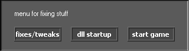
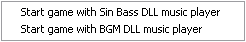
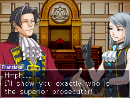

Do you think AO doesn't satisfy you enough? Are you annoyed by the vast amount of toxic spammers* and mods not doing anything?
Are you tired of being fixed to desks on one game?
Have you dreamed of navigating around the game world, like in Ace Attorney Investigations: Miles Edgeworth, while still playing online?
want to erp in an unique, different way? ( ͡° ͜ʖ ͡°)
Well, your dream's come true, because we bring you: Attorney Investigations Online!**
* mostly in the unofficial-official AO discord server and Public Vanilla Server, i hate those toxic, annoying guys
** made by another team other than the AO team (we promise to improve this game as it progresses!)
Game version: v0.2.2
Download AIO v0.2 alpha here.
Once you get it, download the v0.2.2 update here.
Extract the contents of the update on the folder you extracted the game in, and replace files if it asks you to.
NOTE: this game is still in an early development phase (alpha). Any bugs you find or questions you have, please read the Known Issues and FAQ sections at the bottom of this page.
If, after getting the game and update, you're getting this error:ERROR in
action number 1
on Other Event: Game Start
for object obj_ms_client:
Error defining an external function.
then follow these steps:
1. On the game's folder, open the "codec" folder.
2. Open the "opencodecs" installer in that folder, follow the steps, and install it.
3. Once that's done, restart your computer, and the game should work!
If that fixed nothing (the same error still appears), read on.
4. Download this zip file and extract the contents in the game's folder. Replace if it asks you to.
5. Open the newly replaced "aaio.exe" file, and the moment you double-click it, hold the CTRL and shift keys together.
you'll see something like this:

6. Click on "fixes/tweaks". This menu will pop up:

7. Click on the second option, "Start game with BGM DLL music player".
8. You'll reappear at the menu you first saw after starting the game. Now, click on "Start game".
It should work now! If it doesn't, try restarting your computer one more time, or contact me at Headshot#7237 on Discord.
After you start the game, this will be the first thing you'll see. This is the masterserver list menu. It works a little bit different than AO, so we'll get down to how it works.
This is the list of available servers you can join. To pick a server, use the up or down arrow keys, and then when you're ready, click on the "Connect" button below!
This little text at the bottom of the window is a description of the server you've selected. It describes what kind of server it is, and non-vanilla (custom) servers put links to their custom content here. It's always a good habit to check the description before joining (especially in AO).
In this corner of the window, you can see a bunch of buttons. I'll explain what they do.
Click this button to access the options menu, where you can configure certain aspects of the game to your liking (such as the chatbox image). To navigate through the options menu, use the up/down arrow keys and the enter key to change that option.
Nothing much here, just show information about the game version and the team. bow before us ( ͡° ͜ʖ ͡°)
Click this button to manually enter the "IP address" of the server you wish to join. If you hosted your own server using the "aaio_server.exe" executable, you can join it by clicking that button and typing "localhost", and hitting enter. (i will add a favorites menu next release)
Click this button to start a server using the client! Unlike AO which can't do this, with this feature, you can:
- quickly test your own backgrounds and characters
- see if the game's settings are to your liking
- and (probably) more...
This will be the first thing that you'll see after you join a server. Basically what the game is asking you to do is pick your desired character using the arrow keys, and hit ENTER to use it.
Once you pick your character, you're ready to hop in on the fun. Here's a quick overview of the controls: Use the arrow keys to walk, and the SHIFT key to run.
Now, let's analyze what we have here...
The game screen is basically where all the action happens in the game and player sprites are visible, as well as the game following your character.
This little transparent box below the game screen is the chat box. It is where messages sent by other players (or you) appear. It works just like on AO: One message will appear after another, and will be recorded on the Chat History. (4)
This button at the bottom right corner, right next to the Chat box, will show or hide the music list. The music list on AIO works similarly as the music list on AO, except there are a few differences, but I'll divulge into that later on.
This tiny little button with a chat bubble just above the Chat box is the Chat History button. You can click this button to show all the messages that appeared on the Chat box. And click it again to hide it. If you've ever played the mobile versions of Dual Destinies or Spirit of Justice (yes, such a thing exists), you might already know this button does exactly just that.
This is the most important thing to know, especially on AO. to bring up the Emotion Bar, just hit the spacebar key. There are a few key things you should know about it:
If you've played AO, you might already know what these do, except there's a catch. If you haven't played AO, go play it first I'll explain in detail what it is. Basically, these tiny rectangles with faces all over them are called the Emote Buttons. On AO, you click one of those rectangles to set your player's "expression" to go along with your chat message. The difference in AIO's Emote Buttons is that the emote plays instantly the moment you click it.
The page buttons, which look like white left and right arrows, located on the left and right corners of the Emotion Bar, are basically to switch between emotion pages. If your character has more than 24 emote buttons, you can use these to find more emotes. The button with three multi-colored "A"'s, right next to the right Page button, can be used to switch your chat color that will be displayed on the Chat box. You can switch between white, green, red, orange, blue and yellow. Your current chat color is displayed in a small text just below the button, which just says "color".
The white color is used for general talking. The green color, in AAI, is for key facts to keep in mind (Logic, from AAI) and cross-examination (Rebuttal, in AAI's case) text. Orange is used to talk about important, key facts (no, it was never red, it was actually orange) and testimony (or "Argument" in AAI) titles. Red is used for very important key facts, even though it's usually locked as an admin-only color to express anger or something else. Blue is for thinking, and yellow is used when robots are talking.
To change your character, simply click the Switch button to go back to the character selection screen. Thus, the emotion bar will be closed and you'll be able to pick another character of your preference.
As for the "Move" button, if you've ever played the AA games, you know what these do: simply click it to move to another location. A menu will pop up when you click it, showing several "zones" you can move to. (The zone list depends on which server you join.) Simply click one of the pop-up buttons to move to said zone.
The music list in AIO works similarly as the AO music list, except there are a few differences. To open or close the music list in AIO, simply click on the "Music" button located at the bottom right corner of the game window. If you've never used the music list before, let me explain how it works.
When you open the music list, you'll see a bunch of red and green rectangles, along with a black rectangle with instructions at the bottom of these rectangles. A green rectangle means you have the song, while the red rectangle means you don't have said song, or it's a music section.
The music list in servers is mostly divided in sections (prelude, investigation, questioning...) for organization purposes. To use the music list in AIO, simply use the up or down arrow keys, and the ENTER key to play the selected song in a white rectangle. (Note: the music list is also divided by pages. To show the next page, scroll to the bottom of the music list.)
Oh my, how did I end up explaining the most important key fact of AIO so much later?
Moving on...
This black rectangle at the very bottom of the screen is the Chat input line. This is where you actually write your chat message, then hit ENTER to send it. The vertical line along with your text will represent the text color you've selected on the Emotion Bar as explained earlier. Invoking the Chat input line depends on a configuration shown in the Options menu I've explained at the very beginning though: Whether configuration you've set, you can open the Chat input line either by pressing the T key, or immediately when you start typing a message. But which one will happen if I never configured that, you ask? Just press the T key. This can be changed in the Options menu when you start up the game.
I plan on adding this for version v0.3, but right now it doesn't exist, sooo... This section is useless, for now.
You're wondering: Are there commands in AIO? Yes, but at the moment it can only be used on the main chat.
The list of available commands is as follows:
/cmdlist
Show all commands available on the server.
/login <password>
Enter the RCON (remote console) password to become an admin. If you're hosting a server, The password is located on the "server\base.ini" text file, on the "rcon=" line. If it isn't there, you can create one. Never give this password to strangers!
/g <message>
This command sends a broadcast global message to all players on the server, no matter on which zone they're hiding. It's basically the same command from tsuserver3.
/need <text>
The same thing as tsuserver3, this sends a broadcast to all zones on the server specifying what you need.
/status
See some data from all online players, such as: their PID (player ID), character name, the zone ID they're at, and their IP address. This command only works if you're an admin.
/kick <PID> [reason]
If you're an admin, and someone is breaking the rules or spreading AO toxicity, use this to kick them off the server. This is way more efficient than in AO because instead of using a character name, you use player IDs, which is assigned to a player the moment they join, and stays there until they leave the server. To view player IDs, see the above command. Specifying the reason is not necessary, but it's recommended to always do so.
The amount of commands available on the server may vary.
* OOC
* Evidence
* Logic
* Logic Chess (from AAI2, but not sure if I should do this)
* "Close-up chat", specifically, this kind of chatting:

* More vanilla characters and music.
* More built-in commands.
* Collisions with walls are not completely correct; you might get stuck in walls once or twice. You can even move through certain walls.
* Too much text being drawn on aaio_server.exe might consume CPU usage; I will add a fix for this later though.
* ...Did I miss something else?
Q: How can I customize the game's theme?
A: For now, the only thing you can customize is the chat box. Go to the Options menu. You can see all available chatbox images there, at the end of the list. To add more, put it in the "data\misc" folder (must be a png type) and rename it so that starts with the name "chatbox".
Q: When I try to connect to a server, I get "Outdated client" or "Game version mismatch"...?
A: If it says "Outdated client", you haven't downloaded the v0.2.2 update. Find the link above and follow the instructions.
Or if it says "Game version mismatch", the server is running a different AIO version than you are. Try getting an update at tiny.cc/updateaio, or check the server description if there is a download link for a custom client.
NOTE and please read this i beg you: If you downloaded a custom client and it broke your computer, DON'T BOTHER COMING FOR ME. It's the server owner's fault for making malicious code, and your fault for trusting strangers' custom clients. I am not held responsible for any kind of damage occurred to your computer.
Q: I can't see any servers on the main server list menu, and the description says "0".
A: The master server might be down at this moment. Try again later. someone please help hosting the masterserver for me, i cant have a server and masterserver opened at the same time, my pc sucks ass with 512mb ram and i have other stuff to be doing on it... please? :pepe:
Q: The game froze when I switched zones, or it just suddendly crashed!
A: Close the game with the Task Manager if it froze (hit ctrl+shift+esc), and restart the game. I'm looking into this bug whenever I can. If you got an error message, send it to me at Discord, Headshot#7237.
Q: Where are the characters' idle animations stored?
A: It's in one file: "spin.gif". The first frame of that image is the player looking south, and the last, 8th frame of the image is the player looking southeast.
Q: ERROR in
action number 1
on Other Event: Game Start
for object obj_ms_client:
Error defining an external function.
(or similar error message)
A: Make sure you downloaded the v0.2.2 update and that you extracted it in the same folder as the game folder. Try deleting all the .dll files in there so that the game can autoextract them again. Also make sure you went to the "codec" folder, installed "opencodecs" there and restarted your computer, too. If the problem persists, Contact me on Discord: Headshot#7237.